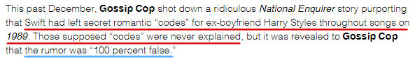

2.无法解释的1989
2012上半年的地下恋情是子虚乌有的，也就是TS和HS之间没有4月份分手，半年后又复合的过程。
上一节提到自从4月9号1D启程去澳洲之后，TS和HS直到9月才再次见面。9月VMA见过一次，10月伦敦Radio 1 Teen Awards见过一次，10月25号媒体报道TS和Kennedy分手，11月14号TS在LA当X Factor的特邀嘉宾，HS从NY飞去LA见TS，15号再飞回伦敦，以11月14号为时间点正式宣告Haylor开始。
11月14号之后，他们再次相遇是12月2号，整个12月他们都处于高调秀恩爱中，中央公园啊，时代广场啊，哪里人多往哪去，又是湖区旅游又是犹他滑雪，进出酒店知道门口都是狗仔也一定要走正门。
I Know Places是这么唱的吗？根本就没藏过，成天招摇撞市的秀恩爱还说他们是猎人我们是狐狸……
媒体：怪我咯？
12月31号时代广场跨年kiss之后他们就一起去维金群岛度假，1月3号据说2人闹翻，TS先行回家。然后就没有然后了。
剩下的2013年，他们唯一的交集就是2月20号的Brits和8月25号的VMA这两个颁奖礼。
到了14年2月底，TS的五专1989全部完成，里面的歌据说大部分是写给HS的。
从2012年11月14开始，到2013年1月3号结束，2个月都不到的一段恋情（主要集中在12月），让TS写了一整张专辑的歌。
难怪有媒体一边说1989中的哪些歌是写HS的，一边说“我自己谈2个月的恋爱最多挤出一条推特，TS竟然能挤出一张专辑，真是天赋秉异，大概这就是创作型歌手和我们凡人的区别吧”
还有媒体说“真是奇怪， TS情绪化得有点夸张了，真有人能在20出头的年纪，为了一段转瞬即逝、短得跟果蝇的生命周期差不多的恋情，打了鸡血似的写出一整张情绪跌宕起伏的专辑？”
满满的吐槽啊……
万一TS就是天赋秉异，多愁善感能为了一段2个月不到的恋情写十几首歌，我们也不能怪她是不。
但当我们仔细看1989中的每一首歌时，越来越多的诡异感、违和感出现了。
写于2013年1月15号的How You Get the Girl中写着
Say it's been a long six months
And you were too afraid to tell her what you want
And that's how it works, it's how you get the girl
And then you say
I want you for worse or for better
I would wait for ever and ever
Broke your heart, I'll put it back together
I would wait for ever and ever
And that's how it works, it's how you get the girl
这首歌被解读为12年4月分手，10月HS求复合的过程，可是上一节我们已经看到了，他们没有4月份的地下恋情，没有分手复合的桥段，只有11月14号-1月3号这不到2个月。a long six months从哪来的？
而且他们1月3号分手，1月15号TS就写了一首一个人如何成功挽回女友心的歌，这太不合情理了。
1989的很多首歌中都描绘了一段分合纠缠的过程
People like you always want back the love they pushed aside —— < All You Had to Do Was Stay >
Broke your heart, I'll put it back together —— < How You Get the Girl>
Makes you wanna run and hide then it makes you turn right back around —— < I Wish You Would >
This love is alive back from the dead —— < This Love >
But you'll come back each time you leave —— < Blank Space >
We were built to fall apart then fall back together —— < Out of the Woods >
When we go crashing down, we come back every time —— < Style >
It was months and months of back and forth —— < Clean >
TS和HS在 13年1月3号突然结束后从未复合过，NEVER EVER，一次复合都没有，就别提we come back every time了，更别提It was months and months of back and forth了。这些歌是怎么回事？
13年5月底或6月初写的I Wish You Would，隐藏信息是He drove past her street each night，HS的确在LA买了房子，离TS家不远，但他是14年3月才买的房子呀，这时候1989都已经全部录完了。那13年TS写这首歌时夜夜开车路过她家的人是谁？
2015年TS接受ELLE采访时提到自己写Clean的经历
"Clean" I wrote as I was walking out of Liberty in London. Someone I used to date—it hit me that I'd been in the same city as him for two weeks and I hadn't thought about it. When it did hit me, it was like, Oh, I hope he's doing well. And nothing else.
Clean，是当我走出伦敦Liberty商场时突然意识到，我和他竟然已经待在同一个城市2周了，没有想他也没有感受到痛苦，我只希望他也能过得好。
TS是2014年2月8号下午被人目击出现在伦敦Liberty商场，Clean的合作者Imogen Heap在自己网站上证实TS联系她并提出想合作一首歌，她们都有空的时间是2月9号星期天，那天TS当着Imogen的面写完了Clean，两人一起工作了10小时完成了这首歌，1989歌词本上的拍立得照片也表示Clean是2月9号完成的。
{kind=link}
{kind=link}
{kind=link}
Clean是1989的收官之作，这首歌的隐藏信息
She lost him but she found herself and somehow that was everything
每当这句话出现时，就意味着1989结束了
Clean是1989普通盘中的最后一首歌
这句隐藏信息出现在每场演唱会结束的大屏幕上
这句隐藏信息是1989六单OOTW的MV的第一个和最后一个镜头
然而这首歌怎么看都和HS没关系
首先，TS说她写Clean的契机是她突然意识到她和旧爱待在同一个城市2周而她没有感到难过只有解脱。这是她2月初在伦敦的领悟，这时候HS在哪呢，他1月底就和James Corden夫妇以及Gary Barlow夫妇到牙买加度假去了，直到2月6号才出现在和姐姐的合影中，2月15号才高调出现在伦敦，TS2月12号就回LA了。TS根本没有和HS同城过 2周，不仅触发写Clean的灵感期间没有同城过2周，在此之前，TS和HS也从未同城过2周。
其次，在Clean歌词中写着
10 months sober I must admit
Just because you're clean don't mean you don't miss it
10 months older I won't give in
Now that I'm clean I'm never gonna risk it
14年2月9号写完的Clean，往前推10个月是13年4月，13年4月TS和HS有交集吗？没有，前面说了他俩2013年总共就只在2月20号的Brits和8月25号的VMA这两次颁奖上碰过面。再加上It was months and months of back and forth，这就奇了怪了。
最后还有一句
I screamed so loud but no one heard a thing
不觉得纳闷吗，TS和HS的恋情天下皆知，如果TS为HS难过心碎，这不是所有人都知道都能懂的事吗？为什么no one heard a thing
同上，TS在谈到I Know Places（5分55秒）时说
When you are in love with this very kind of … along the lines with < Out of the Woods >, it's very precious, it's fragile. As soon as the world gets a hold of it, whether it's your friends or people around town hear about it, it's kind of like the first thing people wanna do when they hear that people are in love is just kind of try to ruin it if they are not the greatest human beings. I kind of was in a place where I was like, no one was gonna sign up for this. There's just too many cameras pointing at me, there are too many ridiculous elaborations on my life. It's just … it's not ever gonna work.
当我处在……和< Out of the Woods >所描述的那段恋爱关系中，这段感情弥足珍贵，却又如履薄冰，一旦被外界所知，不管是周围的朋友还是其他人，有些心怀不轨的人听到谁谈恋爱了，想做的第一件事就是去搞破坏。我曾经经历过，当时周围没有人支持我们的恋爱，太多镜头对着我了，太多人对我的生活胡说八道，这让这段感情没法维持很久。
他们不是相互见过家长，相处很融洽吗，不是队友、朋友都支持吗
no one was gonna sign up for this，周围没有人支持我们，这个我们真的是指她和HS吗？
五专1989中的歌都是相互关联的，它们讲述了一个完整的（爱情）故事，这个故事从RED开始，在1989结束（详细分析见Chapter 3 - 1989）
从歌词内容上看，它讲述了一段脆弱的、无人知晓、没人支持、需要隐藏的恋情，这段恋情经历了a long six months的某阶段，又经历了长达10个月的back and forth，最后在14年2月TS finally clean。这和Haylor的故事完全不相符。
1989中很多歌都传递出悲伤的情绪，我感受到痛感最强的前三首是：Out of the Woods、I Know Places、Clean。
从创作时间上看，这些痛感最强的歌集中在13年底和14年初。
{kind=link}
TS和HS什么时候分手的？13年1月。那时候她写的什么？How You Get the Girl。这首歌痛吗……
为什么刚分手写的歌没痛感，分手一年后写的歌痛感最强，这有违常理。
对照四专RED，TS写的第一首是All Too Well，对方求复合，她写了We Are Never Ever Getting Back Together，8个月后就Begin Again了。刚分手最痛苦，随着时间慢慢减轻，最后完全放下，这才是人的正常反应。
上面列出的和Haylor故事情节不相符的歌包括：All You Had to Do Was Stay、How You Get the Girl、I Wish You Would、This Love、Out of the Woods、I Know Places、Clean、Style，再加上本来就不是写HS的Shake it Off、Blank Space、Bad Blood、New Romantics、Welcome to New York、 You Are in Love，是不是可以说1989压根就和HS没关系呢。
看到这里肯定有人会反驳了：胡说，Style和Out of the Woods明明和HS有关系。
Style有关的就是MV里的纸飞机吧，Out of the Woods还是纸飞机，再把“去年12月”，“你踩了急刹车医院缝了20针”也算进去好了，还有吗？
说白了，1989让人往HS身上联想最大的暗示就是纸飞机项链，除开这个， 1989所描述的和Haylor经历的是两个完全不同的故事。
2014年12月Gossip Cop指出有些媒体报道的 “TS在新专1989中暗藏与HS有关的secret romantic ‘codes'，TS也从没解释过这些” 完全是胡说八道，2015年GC又将这件事说了一遍。
暗藏secret codes是真的（就是每首歌的隐藏信息），TS从没解释过它们也是真的，那GC否认的只能是“这些隐藏信息是关于HS的”这个命题。
那1989到底是什么情况，有这么两种可能：
第一，正如很多人所想，两个月都不到的恋爱能写出什么呀，于是TS凭想象力编了一个故事，里面填上一些HS的元素，让人觉得整张专辑都是写HS的，毕竟写前男友的歌才有卖相嘛。
这也挺正常的。如果是这样的话，TS以后退休了不想唱歌了可以考虑去好莱坞当编剧，没准还能焕发第二春。
第二，1989中所描述的一切都是TS亲身经历过的，真的有a long six months的某阶段，13年4月经历过一场变故，随后10个月back and forth，在13年底前结束，在14年2月finally clean，无声的哭喊狂野的梦，无人知晓、无人支持，在沉静中开始在沉默中结束，梦醒时分，把一切都留在1989中。
真的有这样一个人吗？我说有，不过信不信由你
保守的时间段是12年3月-13年9月，怎么开始和结束的我们都看不到，可以确定的是12年3月已经开始，13年9月还未完全结束。
那12年11月-13年1月的HS算什么？
TS曾说过她绝不会在半夜喝醉酒跑街上去裸奔，因为她是一个role model，她是榜样，她不能这么做。
维护榜样的良好形象是她必须做的（或者说这是偶像包袱吧），TS既不能公开说自己真正爱上的人是谁，也不能公开说自己为谁写的歌，role model的形象需要她有 “男朋友”，那些情歌只能是写“男朋友”的。
Conor是这样的男朋友，HS也是，还有没其他人也是的大家就自己判断了。当然所有的“男朋友”都不是活雷锋，没所图谁来当这个累人的“男朋友”，以后还得“被写歌”呢。HS当时的情况和TS差不多，而且据说是HS那方先提出合作的，当然这是另一个领域的话题了。
为了公众形象由双方合力打造的一段关系我们称为Public Relationship Stunt，简称PR。1989不是写HS的，并不能直接证明TS和HS这段是PR，关于这段的证明放在下一章中。
还记得我前面说，这个故事是从RED时代开始，让我们先回到RED时代。